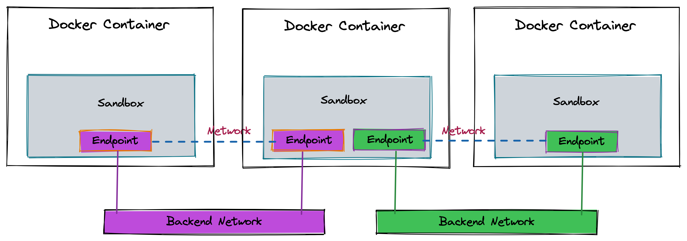
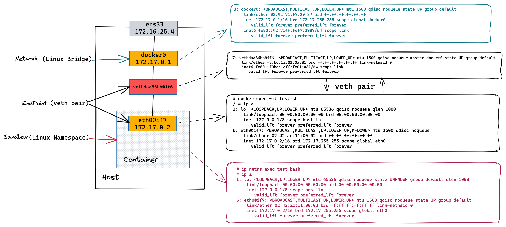
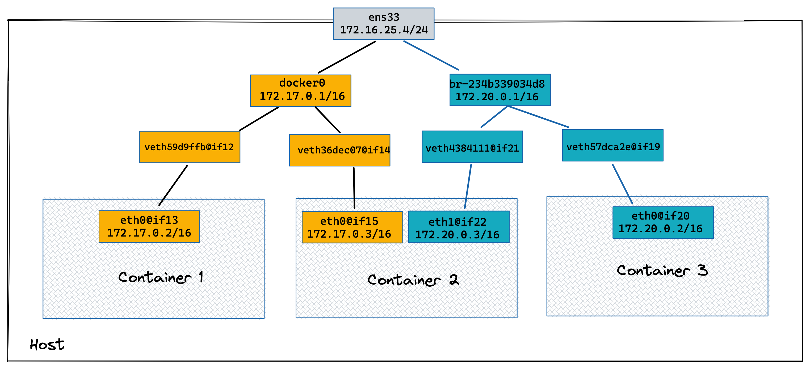
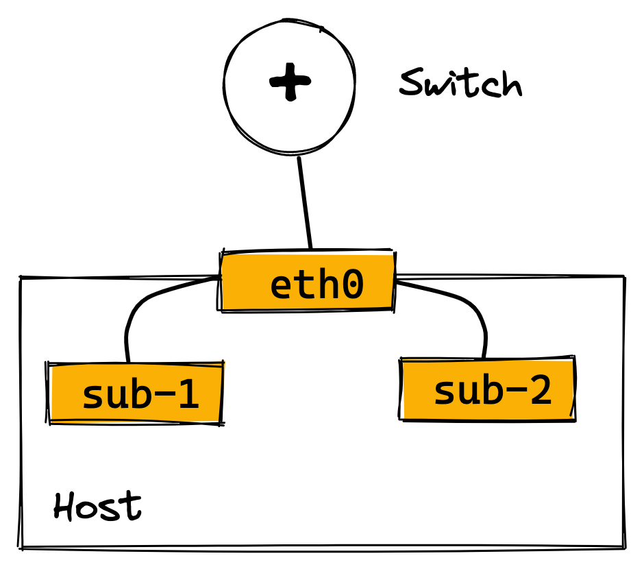
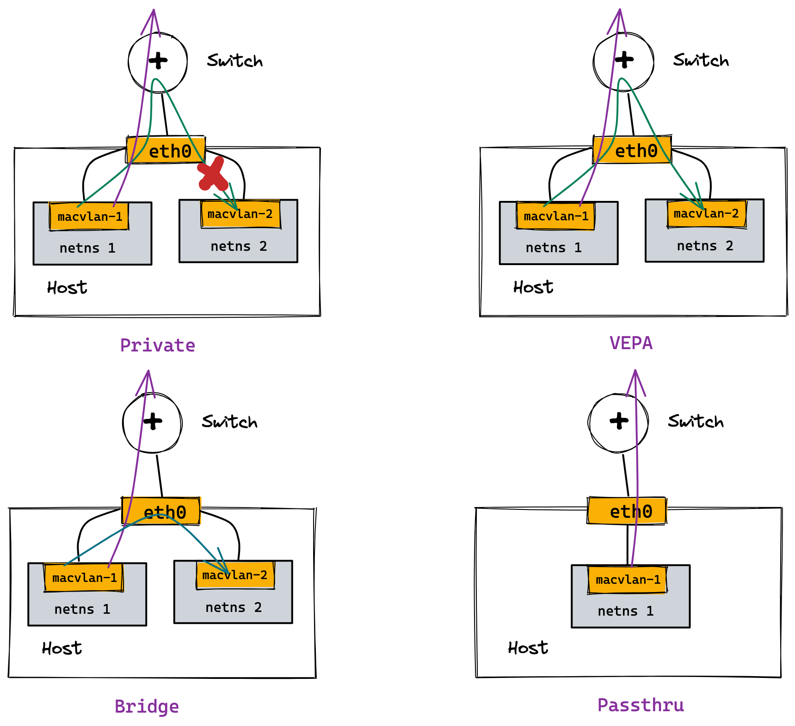

docker network create
docker network ls
docker network inspect
docker network rm
// 将一个已经存在的容器加入到一个 docker 网络
docker network connect
docker network disconnectDocker 网络
Table of Contents
本部分常用命令
1. docker network
2. 基本命令调试相关
docker inspect
docker logs
// 连接到容器主进程，Ctrl +p Ctrl +q 退出主进程
docker attach
docker exec -it3. 创建并查看网络
sudo docker network ls
sudo docker network create -d bridge test_network
sudo docker network inspect test_network4. 将容器挂载都特定网络后查看容器网络
sudo docker network connect test_network test1
sudo docker network connect test_network test2
sudo docker inspect test1
sudo docker inspect test2Container Network Model(CNM)
libnetwork
Docker 的网络模块通过插件的形式为Docker提供网络功能，创建容器和网络过程是解耦的，这样可以保证 Docker 可以支持多种类型的网络。Docker 提出容器网络标准，libnetwork 只是其中的一个实现。
Docker 提出容器网络标准是Container Network Model(CNM), CNM 中包括三种组件：Endpoint、Network、Sandbox。

| Endpoint | Network | Sandbox |
|---|---|---|
|
|
|
CNM Debug
创建一个容器
docker run -itd --rm --name=test busybox
1. 查看容器网络环境 - Endpoint(veth pair container side)
# docker exec -it test sh
/ # ip a
1: lo: <LOOPBACK,UP,LOWER_UP> mtu 65536 qdisc noqueue qlen 1000
link/loopback 00:00:00:00:00:00 brd 00:00:00:00:00:00
inet 127.0.0.1/8 scope host lo
valid_lft forever preferred_lft forever
6: eth0@if7: <BROADCAST,MULTICAST,UP,LOWER_UP,M-DOWN> mtu 1500 qdisc noqueue
link/ether 02:42:ac:11:00:02 brd ff:ff:ff:ff:ff:ff
inet 172.17.0.2/16 brd 172.17.255.255 scope global eth0
valid_lft forever preferred_lft forever2. 查看主机网络环境 - Endpoint(veth pair host side)
# ip a
...
7: vethdaa86bb@if6: <BROADCAST,MULTICAST,UP,LOWER_UP> mtu 1500 qdisc noqueue master docker0 state UP group default
link/ether f2:bd:1a:01:0a:81 brd ff:ff:ff:ff:ff:ff link-netnsid 0
inet6 fe80::f0bd:1aff:fe01:a81/64 scope link
valid_lft forever preferred_lft forever3. 查看主机网络环境 - Netwrok(linux bridge)
# ip a
...
3: docker0: <BROADCAST,MULTICAST,UP,LOWER_UP> mtu 1500 qdisc noqueue state UP group default
link/ether 02:42:71:f7:29:87 brd ff:ff:ff:ff:ff:ff
inet 172.17.0.1/16 brd 172.17.255.255 scope global docker0
valid_lft forever preferred_lft forever
inet6 fe80::42:71ff:fef7:2987/64 scope link
valid_lft forever preferred_lft forever4. 查看 bridge 上挂接的网卡 - Netwrok(linux bridge)
# brctl show
bridge name bridge id STP enabled interfaces
docker0 8000.024271f72987 no vethdaa86bb5. 查看 Linux namespace - Sandbox
pid=$(docker inspect test)
mkdir -p /var/run/netns
ln -sfT /proc/$pid/ns/net /var/run/netns/test
# ip netns
test (id: 0)6. 查看 Linux namespace - Sandbox(进入 Linux namespace)
# ip netns exec test bash
# ip a
1: lo: <LOOPBACK,UP,LOWER_UP> mtu 65536 qdisc noqueue state UNKNOWN group default qlen 1000
link/loopback 00:00:00:00:00:00 brd 00:00:00:00:00:00
inet 127.0.0.1/8 scope host lo
valid_lft forever preferred_lft forever
6: eth0@if7: <BROADCAST,MULTICAST,UP,LOWER_UP> mtu 1500 qdisc noqueue state UP group default
link/ether 02:42:ac:11:00:02 brd ff:ff:ff:ff:ff:ff link-netnsid 0
inet 172.17.0.2/16 brd 172.17.255.255 scope global eth0
valid_lft forever preferred_lft forever7. Clean up
docker stop testDocker Bridge Network Debug

docker0 bridge，同 VALN 下容器，容器出向 NAT
1. 创建两个容器
docker run -itd --rm --name container-1 busybox
docker run -itd --rm --name container-2 busybox2. 查看桥接的网络
# brctl show
bridge name bridge id STP enabled interfaces
docker0 8000.024271f72987 no veth36dec07
veth59d9ffb3. 查看 container-1 和 container-2 的veth IP 地址
# docker exec -it container-1 sh
/ # ip a
1: lo: <LOOPBACK,UP,LOWER_UP> mtu 65536 qdisc noqueue qlen 1000
link/loopback 00:00:00:00:00:00 brd 00:00:00:00:00:00
inet 127.0.0.1/8 scope host lo
valid_lft forever preferred_lft forever
12: eth0@if13: <BROADCAST,MULTICAST,UP,LOWER_UP,M-DOWN> mtu 1500 qdisc noqueue
link/ether 02:42:ac:11:00:02 brd ff:ff:ff:ff:ff:ff
inet 172.17.0.2/16 brd 172.17.255.255 scope global eth0
valid_lft forever preferred_lft forever
# docker exec -it container-2 sh
/ # ip a
1: lo: <LOOPBACK,UP,LOWER_UP> mtu 65536 qdisc noqueue qlen 1000
link/loopback 00:00:00:00:00:00 brd 00:00:00:00:00:00
inet 127.0.0.1/8 scope host lo
valid_lft forever preferred_lft forever
14: eth0@if15: <BROADCAST,MULTICAST,UP,LOWER_UP,M-DOWN> mtu 1500 qdisc noqueue
link/ether 02:42:ac:11:00:03 brd ff:ff:ff:ff:ff:ff
inet 172.17.0.3/16 brd 172.17.255.255 scope global eth0
valid_lft forever preferred_lft forever4. 从 container-2 分别 ping contianer-1 及 外网
/ # ping 172.17.0.2 -c3
PING 172.17.0.2 (172.17.0.2): 56 data bytes
64 bytes from 172.17.0.2: seq=0 ttl=64 time=0.245 ms
64 bytes from 172.17.0.2: seq=1 ttl=64 time=0.080 ms
64 bytes from 172.17.0.2: seq=2 ttl=64 time=0.111 ms
/ # ping 8.8.8.8 -c3
PING 8.8.8.8 (8.8.8.8): 56 data bytes
64 bytes from 8.8.8.8: seq=0 ttl=110 time=164.365 ms
64 bytes from 8.8.8.8: seq=1 ttl=110 time=155.537 ms
64 bytes from 8.8.8.8: seq=2 ttl=110 time=161.147 ms5. 查看 iptables nat 表，查看出访 NAT 规则 MASQUERADE
# iptables -t nat -vnL
Chain PREROUTING (policy ACCEPT 24 packets, 2508 bytes)
pkts bytes target prot opt in out source destination
5 624 DOCKER all -- * * 0.0.0.0/0 0.0.0.0/0 ADDRTYPE match dst-type LOCAL
Chain INPUT (policy ACCEPT 18 packets, 1818 bytes)
pkts bytes target prot opt in out source destination
Chain OUTPUT (policy ACCEPT 26 packets, 1678 bytes)
pkts bytes target prot opt in out source destination
0 0 DOCKER all -- * * 0.0.0.0/0 !127.0.0.0/8 ADDRTYPE match dst-type LOCAL
Chain POSTROUTING (policy ACCEPT 26 packets, 1678 bytes)
pkts bytes target prot opt in out source destination
5 362 MASQUERADE all -- * !docker0 172.17.0.0/16 0.0.0.0/0
Chain DOCKER (2 references)
pkts bytes target prot opt in out source destination
2 168 RETURN all -- docker0 * 0.0.0.0/0 0.0.0.0/0创建新 bridge 网络
1. 查看当前 Host 上 Docker 网络
# docker network ls
NETWORK ID NAME DRIVER SCOPE
d478c3f57b56 bridge bridge local
0e21a01b73a4 host host local
d89416378101 none null local2. 创建一个 bridge 模式网络
docker network create --driver bridge bridge03. 再次查看容器网络
# docker network ls
NETWORK ID NAME DRIVER SCOPE
d478c3f57b56 bridge bridge local
234b339034d8 bridge0 bridge local
0e21a01b73a4 host host local
d89416378101 none null local|
Note
|
ID 为234b339034d8, NAME 为bridge0为新创建的容器网络
|
4. 查看主机网络空间
# ip a
...
18: br-234b339034d8: <NO-CARRIER,BROADCAST,MULTICAST,UP> mtu 1500 qdisc noqueue state DOWN group default
link/ether 02:42:29:83:97:a5 brd ff:ff:ff:ff:ff:ff
inet 172.20.0.1/16 brd 172.20.255.255 scope global br-234b339034d8
valid_lft forever preferred_lft forever使用非默认 Linux bridge 网络创建容器
1. 使用 isolated_nw 创建容器
docker run -itd --rm --name=container-3 --network=bridge0 busybox2. 查看 container-3 的veth IP 地址
# docker exec -it container-3 sh
/ # ip a
1: lo: <LOOPBACK,UP,LOWER_UP> mtu 65536 qdisc noqueue qlen 1000
link/loopback 00:00:00:00:00:00 brd 00:00:00:00:00:00
inet 127.0.0.1/8 scope host lo
valid_lft forever preferred_lft forever
19: eth0@if20: <BROADCAST,MULTICAST,UP,LOWER_UP,M-DOWN> mtu 1500 qdisc noqueue
link/ether 02:42:ac:14:00:02 brd ff:ff:ff:ff:ff:ff
inet 172.20.0.2/16 brd 172.20.255.255 scope global eth0
valid_lft forever preferred_lft forever3. container-3 中 ping container-2 容器
/ # ping 172.17.0.3 -c10
PING 172.17.0.3 (172.17.0.3): 56 data bytes
--- 172.17.0.3 ping statistics ---
10 packets transmitted, 0 packets received, 100% packet loss4. 在主机网络空间查看 iptables filter 表
# iptables -t filter -vnL
Chain INPUT (policy ACCEPT 197 packets, 13668 bytes)
pkts bytes target prot opt in out source destination
Chain FORWARD (policy DROP 0 packets, 0 bytes)
pkts bytes target prot opt in out source destination
10 840 DOCKER-USER all -- * * 0.0.0.0/0 0.0.0.0/0
10 840 DOCKER-ISOLATION-STAGE-1 all -- * * 0.0.0.0/0 0.0.0.0/0
0 0 ACCEPT all -- * br-234b339034d8 0.0.0.0/0 0.0.0.0/0 ctstate RELATED,ESTABLISHED
0 0 DOCKER all -- * br-234b339034d8 0.0.0.0/0 0.0.0.0/0
0 0 ACCEPT all -- br-234b339034d8 !br-234b339034d8 0.0.0.0/0 0.0.0.0/0
0 0 ACCEPT all -- br-234b339034d8 br-234b339034d8 0.0.0.0/0 0.0.0.0/0
6 504 ACCEPT all -- * docker0 0.0.0.0/0 0.0.0.0/0 ctstate RELATED,ESTABLISHED
0 0 DOCKER all -- * docker0 0.0.0.0/0 0.0.0.0/0
11 866 ACCEPT all -- docker0 !docker0 0.0.0.0/0 0.0.0.0/0
0 0 ACCEPT all -- docker0 docker0 0.0.0.0/0 0.0.0.0/0
Chain OUTPUT (policy ACCEPT 103 packets, 15008 bytes)
pkts bytes target prot opt in out source destination
Chain DOCKER (2 references)
pkts bytes target prot opt in out source destination
Chain DOCKER-ISOLATION-STAGE-1 (1 references)
pkts bytes target prot opt in out source destination
10 840 DOCKER-ISOLATION-STAGE-2 all -- br-234b339034d8 !br-234b339034d8 0.0.0.0/0 0.0.0.0/0
11 866 DOCKER-ISOLATION-STAGE-2 all -- docker0 !docker0 0.0.0.0/0 0.0.0.0/0
17 1370 RETURN all -- * * 0.0.0.0/0 0.0.0.0/0
Chain DOCKER-ISOLATION-STAGE-2 (2 references)
pkts bytes target prot opt in out source destination
0 0 DROP all -- * br-234b339034d8 0.0.0.0/0 0.0.0.0/0
10 840 DROP all -- * docker0 0.0.0.0/0 0.0.0.0/0
11 866 RETURN all -- * * 0.0.0.0/0 0.0.0.0/0
Chain DOCKER-USER (1 references)
pkts bytes target prot opt in out source destination
27 2210 RETURN all -- * * 0.0.0.0/0 0.0.0.0/0|
Note
|
Docker 使用 iptables filter 表实现隔离。 |
|
Note
|
10 840 DROP all — * docker0 0.0.0.0/0 0.0.0.0/0 表示 docker0 网络 DROP 掉包的数量为 10，该包来自第 3 步 ping 请求。
|
5. 连接 container-2 到新创建的网络
docker network connect bridge0 container-26. 查看新增 veth Pair
$ ip a
...
22: veth4384111@if21: <BROADCAST,MULTICAST,UP,LOWER_UP> mtu 1500 qdisc noqueue master br-234b339034d8 state UP group default
link/ether 62:02:8a:76:c5:2a brd ff:ff:ff:ff:ff:ff link-netnsid 1
inet6 fe80::6002:8aff:fe76:c52a/64 scope link
valid_lft forever preferred_lft forever7. 查看 container-2 veth IP
# docker exec -it container-2 sh
/ # ip a
1: lo: <LOOPBACK,UP,LOWER_UP> mtu 65536 qdisc noqueue qlen 1000
link/loopback 00:00:00:00:00:00 brd 00:00:00:00:00:00
inet 127.0.0.1/8 scope host lo
valid_lft forever preferred_lft forever
14: eth0@if15: <BROADCAST,MULTICAST,UP,LOWER_UP,M-DOWN> mtu 1500 qdisc noqueue
link/ether 02:42:ac:11:00:03 brd ff:ff:ff:ff:ff:ff
inet 172.17.0.3/16 brd 172.17.255.255 scope global eth0
valid_lft forever preferred_lft forever
21: eth1@if22: <BROADCAST,MULTICAST,UP,LOWER_UP,M-DOWN> mtu 1500 qdisc noqueue
link/ether 02:42:ac:14:00:03 brd ff:ff:ff:ff:ff:ff
inet 172.20.0.3/16 brd 172.20.255.255 scope global eth1
valid_lft forever preferred_lft forever18. 从 container-3 ping continer-2
/ # ping 172.17.0.3 -c3
PING 172.17.0.3 (172.17.0.3): 56 data bytes
64 bytes from 172.17.0.3: seq=0 ttl=64 time=0.267 ms
64 bytes from 172.17.0.3: seq=1 ttl=64 time=0.128 ms
64 bytes from 172.17.0.3: seq=2 ttl=64 time=0.118 msClean Up
1. 停止所有创建的容器
for i in 1 2 3 ; do sudo docker stop container-$i ; done2. 删除容器网络
sudo docker network rm isolated_nwDocker 网络端口映射
1. 启动容器是 -p 参数指定端口映射
docker run -it --rm --name container-1 -p 8080:80 -d nginx2. 访问容器
# curl 127.0.0.1:8080 -I -s | head -2
HTTP/1.1 200 OK
Server: nginx/1.19.10
# curl 172.16.25.4:8080 -I -s | head -2
HTTP/1.1 200 OK
Server: nginx/1.19.103. 查看 net 表规则
# iptables -t nat -vnL
Chain PREROUTING (policy ACCEPT 0 packets, 0 bytes)
pkts bytes target prot opt in out source destination
5 624 DOCKER all -- * * 0.0.0.0/0 0.0.0.0/0 ADDRTYPE match dst-type LOCAL
Chain INPUT (policy ACCEPT 0 packets, 0 bytes)
pkts bytes target prot opt in out source destination
Chain OUTPUT (policy ACCEPT 8 packets, 480 bytes)
pkts bytes target prot opt in out source destination
1 60 DOCKER all -- * * 0.0.0.0/0 !127.0.0.0/8 ADDRTYPE match dst-type LOCAL
Chain POSTROUTING (policy ACCEPT 9 packets, 540 bytes)
pkts bytes target prot opt in out source destination
5 362 MASQUERADE all -- * !docker0 172.17.0.0/16 0.0.0.0/0
0 0 MASQUERADE tcp -- * * 172.17.0.2 172.17.0.2 tcp dpt:80
Chain DOCKER (2 references)
pkts bytes target prot opt in out source destination
2 168 RETURN all -- docker0 * 0.0.0.0/0 0.0.0.0/0
1 60 DNAT tcp -- !docker0 * 0.0.0.0/0 0.0.0.0/0 tcp dpt:8080 to:172.17.0.2:80|
Note
|
Docker 网络端口映射是通过 iptables nat 表实现，1 60 DNAT tcp — !docker0 * 0.0.0.0/0 0.0.0.0/0 tcp dpt:8080 to:172.17.0.2:80 为将请求 DNAT 到172.17.0.2:80 容器。
|
4. 停止容器
docker stop container-1none 和 host 类型网络
1. 查看三种模型
$ sudo docker network ls |awk '{print $2}'|awk '(NR>1)'
bridge
host
none2. 创建 none 类型容器，并查看容器网络
# docker run -it --rm --name container-1 --network none -d busybox
# docker attach container-1
/ # ip a
1: lo: <LOOPBACK,UP,LOWER_UP> mtu 65536 qdisc noqueue qlen 1000
link/loopback 00:00:00:00:00:00 brd 00:00:00:00:00:00
inet 127.0.0.1/8 scope host lo
valid_lft forever preferred_lft forever3. 创建 host 类型容器，并查看容器网络
# docker run -it --rm --name container-1 --network host -d busybox
# docker attach container-1
/ # ip a
1: lo: <LOOPBACK,UP,LOWER_UP> mtu 65536 qdisc noqueue qlen 1000
link/loopback 00:00:00:00:00:00 brd 00:00:00:00:00:00
inet 127.0.0.1/8 scope host lo
valid_lft forever preferred_lft forever
inet6 ::1/128 scope host
valid_lft forever preferred_lft forever
2: ens33: <BROADCAST,MULTICAST,UP,LOWER_UP> mtu 1500 qdisc pfifo_fast qlen 1000
link/ether 00:0c:29:5e:cb:0e brd ff:ff:ff:ff:ff:ff
inet 172.16.25.4/24 brd 172.16.25.255 scope global dynamic noprefixroute ens33
valid_lft 72671sec preferred_lft 72671sec
inet6 fd15:4ba5:5a2b:1008:79e3:7c8a:40e3:f082/64 scope global dynamic noprefixroute
valid_lft 2591981sec preferred_lft 604781sec
inet6 fe80::a894:f2f8:295a:126d/64 scope link noprefixroute
valid_lft forever preferred_lft forever
3: docker0: <NO-CARRIER,BROADCAST,MULTICAST,UP> mtu 1500 qdisc noqueue
link/ether 02:42:71:f7:29:87 brd ff:ff:ff:ff:ff:ff
inet 172.17.0.1/16 brd 172.17.255.255 scope global docker0
valid_lft forever preferred_lft forever
inet6 fe80::42:71ff:fef7:2987/64 scope link
valid_lft forever preferred_lft foreverMACVLAN
什么是 MACVLAN
Linux sub-interface 机制允许在netdev设备上挂载虚拟子网卡，虚拟子网卡的流量最终从挂载的netdev设备发出。

MACVLAN 是一种 Linux sub-interface，每个 MACVLAN 子接口都有独立的 IP 和 MAC 地址，可以通过挂载的物理网卡直接连接到物理网卡。
MACVLAN 会消耗物理网络的 IP 资源，增加物理网络的 MAC 地址数量，同时需要物理网络设备打卡混杂模式 promiscuous mode。以及需要 Linux kernel V3.9-V3.19， V4.0+。
MACVLAN 四种工作模式

| 模式 | 描述 |
|---|---|
Private |
|
VEPA(Virtual Ethernet Port Aggregator) |
|
Bridge |
|
Passthru |
|
Docker MACVLAN
1. 创建 MACVLAN 类型的网络
sudo docker network create -d macvlan --subnet 10.1.10.0/24 --ip-range 10.1.10.240/28 --gateway 10.1.10.1 -o parent=ens33 macvlan-12. 查看创建的网络
$ sudo docker network ls
NETWORK ID NAME DRIVER SCOPE
01ff09740af4 bridge bridge local
f6dbdda8ec13 host host local
ffc1e109b33b macvlan-1 macvlan local
99496b4f2b1d none null local3. 创建容器
sudo docker run -it --rm --network=macvlan-1 --name=test-1 -d busybox
sudo docker run -it --rm --network=macvlan-1 --name=test-2 -d busybox4. 查看容器 test-1 的 IP 地址
$ sudo docker attach test-1
/ # ip a
1: lo: <LOOPBACK,UP,LOWER_UP> mtu 65536 qdisc noqueue qlen 1000
link/loopback 00:00:00:00:00:00 brd 00:00:00:00:00:00
inet 127.0.0.1/8 scope host lo
valid_lft forever preferred_lft forever
5: eth0@if2: <BROADCAST,MULTICAST,UP,LOWER_UP,M-DOWN> mtu 1500 qdisc noqueue
link/ether 02:42:0a:01:0a:f0 brd ff:ff:ff:ff:ff:ff
inet 10.1.10.240/24 brd 10.1.10.255 scope global eth0
valid_lft forever preferred_lft forever5. 查看容器 test-2 的 IP 地址
$ sudo docker attach test-2
/ # ip a
1: lo: <LOOPBACK,UP,LOWER_UP> mtu 65536 qdisc noqueue qlen 1000
link/loopback 00:00:00:00:00:00 brd 00:00:00:00:00:00
inet 127.0.0.1/8 scope host lo
valid_lft forever preferred_lft forever
8: eth0@if2: <BROADCAST,MULTICAST,UP,LOWER_UP,M-DOWN> mtu 1500 qdisc noqueue
link/ether 02:42:0a:01:0a:f1 brd ff:ff:ff:ff:ff:ff
inet 10.1.10.241/24 brd 10.1.10.255 scope global eth0
valid_lft forever preferred_lft forever6. test-1 中 ping test-2
/ # ping 10.1.10.241 -c3
PING 10.1.10.241 (10.1.10.241): 56 data bytes
64 bytes from 10.1.10.241: seq=0 ttl=64 time=0.103 ms
64 bytes from 10.1.10.241: seq=1 ttl=64 time=0.103 ms
64 bytes from 10.1.10.241: seq=2 ttl=64 time=0.072 ms7. 创建 MACVLAN 子接口
sudo docker network create -d macvlan --subnet 10.1.11.0/24 --gateway 10.1.11.1 -o parent=ens33.50 macvlan.508. 查看主机网络空间
$ ip a
...
9: ens33.50@ens33: <BROADCAST,MULTICAST,UP,LOWER_UP> mtu 1500 qdisc noqueue state UP group default
link/ether 00:0c:29:10:a9:6c brd ff:ff:ff:ff:ff:ff
inet6 fe80::20c:29ff:fe10:a96c/64 scope link
valid_lft forever preferred_lft forever9. 查看创建的 VLAN 子接口
$ ip link show type vlan
9: ens33.50@ens33: <BROADCAST,MULTICAST,UP,LOWER_UP> mtu 1500 qdisc noqueue state UP mode DEFAULT group default
link/ether 00:0c:29:10:a9:6c brd ff:ff:ff:ff:ff:ff10. 创建一个容器
sudo docker run -it --rm -d --network macvlan.50 --name test-3 busybox11. 查看 test-3 容器 IP 地址
$ sudo docker attach test-3
/ # ip a
1: lo: <LOOPBACK,UP,LOWER_UP> mtu 65536 qdisc noqueue qlen 1000
link/loopback 00:00:00:00:00:00 brd 00:00:00:00:00:00
inet 127.0.0.1/8 scope host lo
valid_lft forever preferred_lft forever
10: eth0@if9: <BROADCAST,MULTICAST,UP,LOWER_UP,M-DOWN> mtu 1500 qdisc noqueue
link/ether 02:42:0a:01:0b:02 brd ff:ff:ff:ff:ff:ff
inet 10.1.11.2/24 brd 10.1.11.255 scope global eth0
valid_lft forever preferred_lft forever12. 清空实验环境
for i in $(sudo docker ps | awk '{print $1}' | awk '(NR>1)') ; do sudo docker stop $i ; done
sudo docker network rm macvlan-1 macvlan.50Docker DNS
1. 创建容器
sudo docker run -it --rm --name test-1 -d busybox2. ping 容器名
$ sudo docker attach test-1
/ # ping test-1
ping: bad address 'test-1'3. 查看容器 /etc/resolv.conf
/ # cat /etc/resolv.conf
# This file is managed by man:systemd-resolved(8). Do not edit.
#
# This is a dynamic resolv.conf file for connecting local clients directly to
# all known uplink DNS servers. This file lists all configured search domains.
#
# Third party programs must not access this file directly, but only through the
# symlink at /etc/resolv.conf. To manage man:resolv.conf(5) in a different way,
# replace this symlink by a static file or a different symlink.
#
# See man:systemd-resolved.service(8) for details about the supported modes of
# operation for /etc/resolv.conf.
nameserver 10.1.10.24. 创建一个新容器
sudo docker run -it --rm --name test-2 --hostname test-2 -d busybox5. 进入 test-2 主进程，ping 容器名称
$ sudo docker attach test-2
/ # ping test-2
PING test-2 (172.17.0.3): 56 data bytes
64 bytes from 172.17.0.3: seq=0 ttl=64 time=0.036 ms
64 bytes from 172.17.0.3: seq=1 ttl=64 time=0.075 ms5. 创建第三个容器
sudo docker run -it --rm --name test-3 --hostname test-3 --link test-1 --link test-2 -d busybox6. 进入 test-2 主进程，ping test-1 和 test-2
$ sudo docker attach test-3
/ # ping test-1 -c3
PING test-1 (172.17.0.2): 56 data bytes
64 bytes from 172.17.0.2: seq=0 ttl=64 time=0.087 ms
64 bytes from 172.17.0.2: seq=1 ttl=64 time=0.117 ms
64 bytes from 172.17.0.2: seq=2 ttl=64 time=0.111 ms
--- test-1 ping statistics ---
3 packets transmitted, 3 packets received, 0% packet loss
round-trip min/avg/max = 0.087/0.105/0.117 ms
/ # ping test-2 -c3
PING test-2 (172.17.0.3): 56 data bytes
64 bytes from 172.17.0.3: seq=0 ttl=64 time=0.262 ms
64 bytes from 172.17.0.3: seq=1 ttl=64 time=0.079 ms
64 bytes from 172.17.0.3: seq=2 ttl=64 time=0.116 ms
--- test-2 ping statistics ---
3 packets transmitted, 3 packets received, 0% packet loss
round-trip min/avg/max = 0.079/0.152/0.262 ms7. 创建容器，指定 DNS 服务器
sudo docker run -it --rm --name test-4 --hostname test-4 --dns 8.8.8.8 -d busybox8. 进入到 test-4 主进程，查看 resolv.conf
$ sudo docker attach test-4
/ # cat /etc/resolv.conf
nameserver 8.8.8.89. 创建一个 bridge 类型容器网络
sudo docker network create test_dns10. 创建一个容器使用 test_dns 网络
sudo docker run -it --rm --name test-5 --network test_dns -d busybox11. 进入 test-5 主进程 ping test-5
$ sudo docker attach test-5
/ # ping test-5 -c3
PING test-5 (172.18.0.2): 56 data bytes
64 bytes from 172.18.0.2: seq=0 ttl=64 time=0.032 ms
64 bytes from 172.18.0.2: seq=1 ttl=64 time=0.093 ms
64 bytes from 172.18.0.2: seq=2 ttl=64 time=0.090 ms12. 查看 test-5 的 resolv.conf
$ sudo docker attach test-5
/ # cat /etc/resolv.conf
nameserver 127.0.0.11
options ndots:013. 创建新容器
sudo docker run -it --rm --name test-6 --network test_dns -d busybox14. 进图到 test-6 ping test-5
$ sudo docker attach test-6
/ # ping test-5 -c3
PING test-5 (172.18.0.2): 56 data bytes
64 bytes from 172.18.0.2: seq=0 ttl=64 time=0.075 ms
64 bytes from 172.18.0.2: seq=1 ttl=64 time=0.123 ms
64 bytes from 172.18.0.2: seq=2 ttl=64 time=0.116 ms15. 删除所有创建的容器
for i in $(sudo docker ps | awk '{print $1}' | awk '(NR>1)') ; do sudo docker stop $i ; done16. 删除容器网络
sudo docker network rm test_dns